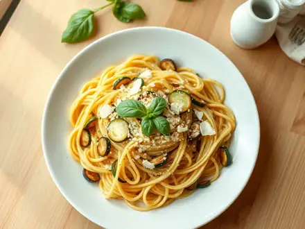
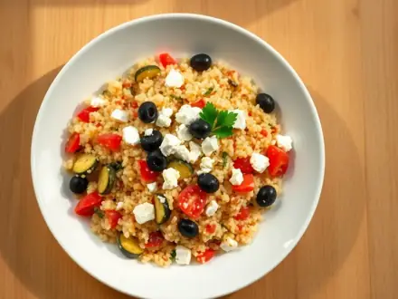
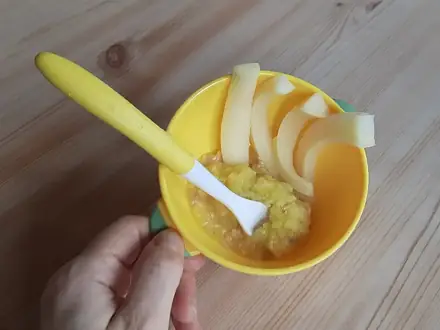
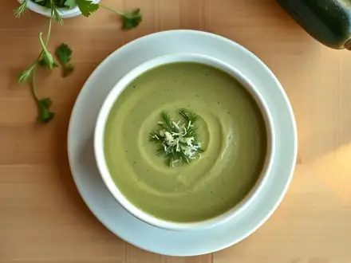
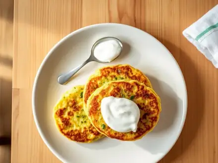
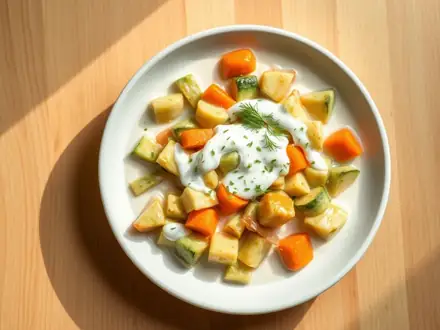
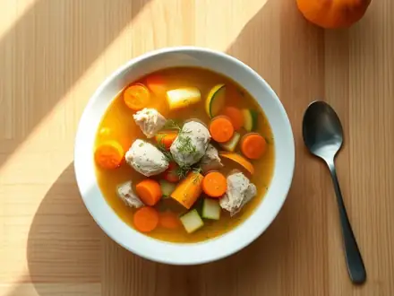

Что приготовить из кабачков
Оладьи, рагу и запеканки из кабачков. 20 рецептов: у каждого время, калории и БЖУ на порцию, пошаговые инструкции и список покупок
 Овощи на пару20 мин · 127 ккал · Б 5 г · Гарнир
Овощи на пару20 мин · 127 ккал · Б 5 г · Гарнир
Паста с кабачками и чесноком20 мин · 575 ккал · Б 17 г · Второе блюдо
Кускус с овощами и фетой20 мин · 555 ккал · Б 18 г · Второе блюдо Кабачки жареные с чесноком25 мин · 264 ккал · Б 3 г · Закуска
Кабачки жареные с чесноком25 мин · 264 ккал · Б 3 г · Закуска
Пюре из кабачка и цветной капусты25 мин · 46 ккал · Б 2 г · Гарнир Кускус с курицей и овощами по-мароккански25 мин · 557 ккал · Б 38 г · Второе блюдо
Кускус с курицей и овощами по-мароккански25 мин · 557 ккал · Б 38 г · Второе блюдо
Крем-суп из кабачков25 мин · 199 ккал · Б 4 г · Суп Куриные биточки с кабачком30 мин · 327 ккал · Б 25 г · Второе блюдо
Куриные биточки с кабачком30 мин · 327 ккал · Б 25 г · Второе блюдо Курица с кабачками и помидорами на сковороде30 мин · 316 ккал · Б 42 г · Второе блюдо
Курица с кабачками и помидорами на сковороде30 мин · 316 ккал · Б 42 г · Второе блюдо Котлеты из индейки с кабачком30 мин · 337 ккал · Б 27 г · Второе блюдо
Котлеты из индейки с кабачком30 мин · 337 ккал · Б 27 г · Второе блюдо
Кабачковые оладьи с сыром и чесноком30 мин · 544 ккал · Б 18 г · Второе блюдо Кабачки, запечённые с творогом и сыром30 мин · 487 ккал · Б 37 г · Второе блюдо
Кабачки, запечённые с творогом и сыром30 мин · 487 ккал · Б 37 г · Второе блюдо
Кабачки, тушённые в сметане30 мин · 446 ккал · Б 7 г · Второе блюдо
Суп с индейкой и кабачком30 мин · 157 ккал · Б 25 г · Суп Индейка на пару с овощами35 мин · 292 ккал · Б 50 г · Второе блюдо
Индейка на пару с овощами35 мин · 292 ккал · Б 50 г · Второе блюдо- Овощной суп-пюре40 мин · 94 ккал · Б 3 г · Суп
 Индейка, тушённая с овощами45 мин · 273 ккал · Б 37 г · Второе блюдо
Индейка, тушённая с овощами45 мин · 273 ккал · Б 37 г · Второе блюдо Овощное рагу50 мин · 228 ккал · Б 5 г · Второе блюдо
Овощное рагу50 мин · 228 ккал · Б 5 г · Второе блюдо Минестроне50 мин · 235 ккал · Б 8 г · Суп
Минестроне50 мин · 235 ккал · Б 8 г · Суп Рататуй75 мин · 186 ккал · Б 4 г · Второе блюдо
Рататуй75 мин · 186 ккал · Б 4 г · Второе блюдо
Другие подборки
- Что приготовить из курицы
- Что приготовить из фарша
- Что приготовить из мяса
- Что приготовить из рыбы
- Что приготовить из картошки
- Что приготовить из яиц
- Что приготовить из творога
- Что приготовить из капусты
- Что приготовить из грибов
- Что приготовить из риса
- Что приготовить из макарон
- Что приготовить из гречки
- Быстрый ужин за 30 минут
- Быстрый завтрак за 20 минут
- Что приготовить на скорую руку
- ПП-рецепты: лёгкие блюда до 400 ккал
- Белковые блюда: от 25 г белка на порцию
- Дешёвые рецепты из простых продуктов
- Что приготовить ребёнку
- Постные блюда
- Блюда на пару
- Что приготовить в духовке
- Простые супы
- Простые салаты
- Выпечка и десерты
- Блюда на праздничный стол
- Что приготовить из остатков